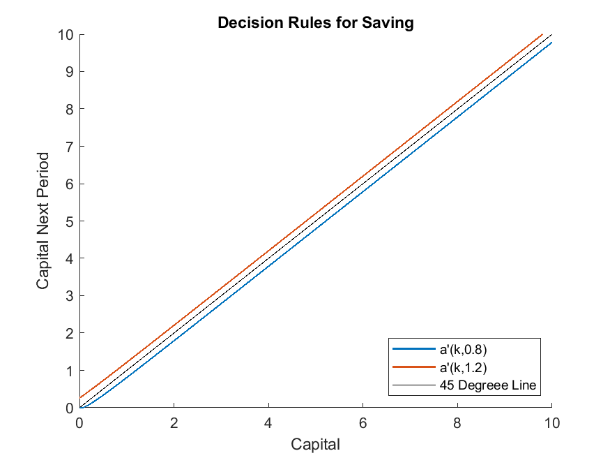

Huggett (1997): Steady States and Transition Paths in Heterogeneous Agent Models
The Model
We use the seminal work Huggett (1997) to illustrate how the toolbox can be used to solve steady states and transition paths of a heterogeneous-agent model. The example also demonstrates how to conduct non-stochastic simulations using the toolbox, by keeping track of the distribution function over a refined grid of individual state variables.
Though the toolbox is not designed for solving the equilibrium of this type of model directly, since the decision problem is characterized by an equation system (the Euler equation
where \(\lambda_t\) is the Lagrange multiplier on the borrowing constraint, and the complementary-slackness condition, \(\lambda_t k_{t+1}=0\)) with state transition functions, it readily fits in the toolbox’s general framework. One just needs an extra fixed-point loop to update the aggregate equilibrium object, which can be coded in MATLAB. For the one-sector model studied by Huggett (1997), the steady state aggregate equilibrium object is the aggregate capital stock; the transition path aggregate equilibrium object is the time sequence of the aggregate capital stock.
We directly define the equilibrium, which covers all the ingredients we need for computing the model. For the full description of the model, see Huggett (1997) .
A sequential equilibrium is a time sequence of (1) policy functions \(c_{t}(k,e)\), \(\lambda_t(k,e)\), \(k'_t(k,e)\); (2) measures over individual states \(\phi_t\); (3) aggregate prices and quantities \(w_t, r_t, K_t\), s.t.
\(c_t(k,e), \lambda_t(k,e), k_t'(k,e)\) satisfy individuals’ optimality conditions. That is, they solve
Prices are competitively determined and markets clearing:
\(\phi_t\) are consistent with the transitions implied by policy functions and exogenous shocks.
A steady-state equilibrium is a sequential equilibrium with time-invariant equilibrium objects.
Notice we have transformed the individual’s optimization problem into first order conditions and complementarity slackness conditions, which enable us to solve the decision problem with the toolbox.
The gmod File and MATLAB File
1% Toolbox options
2INTERP_ORDER = 4; ExtrapOrder = 4;
3SIMU_RESOLVE = 0; SIMU_INTERP = 1;
4SaveFreq = inf; PrintFreq = 100;
5TolEq = 1e-6;
6% Parameters
7parameters beta sigma kMin r w;
8beta = 0.96; % discount factor
9sigma = 1.5; % CRRA coefficient
10alpha = 0.36; % capital share in production
11delta = 0.1; % depreciation rate
12
13% States
14var_state k;
15kPts = 100;
16kMin = 0;
17kMax = 20;
18kShift = 1e-3;
19k = exp(linspace(log(kMin+1e-3),log(kMax+1e-3),kPts)) - 1e-3;
20
21% Shock process in Huggett (1997)
22var_shock e;
23e = [0.8, 1.2];
24shock_num = 2;
25shock_trans = [0.5,0.5;0.5,0.5];
26
27% Representative-agent steady state
28kSs = ( (1/beta+delta-1) / alpha )^(1/(alpha-1));
29% Initial prices
30r = alpha*kSs^(alpha-1) - delta;
31w = (1-alpha)*kSs^alpha;
32
33% State transition functions
34var_interp Evp_interp;
35initial Evp_interp (k.*(1+r)+e.*w).^(-sigma);
36% Update
37Evp_interp = shock_trans*vp;
38
39% Endogenous variables
40var_policy k_next lambda;
41inbound k_next kMin k.*(1+r)+e.*w;
42inbound lambda 0 1.0;
43
44% Other variables
45var_aux c vp;
46% Used in simulation
47var_output c k_next;
48var_others kSs alpha delta output_interp_t;
49
50TASK = 'ss'; % Default task, need overwritten
51output_interp_t = {}; % Default transition path;
52pre_iter;
53 % The pre_iter block will be called at the beginning of every policy iteration
54 switch TASK
55 case 'ss'
56 case 'transition'
57 t = T - GDSGE_Iter + 1; % Convert forward to backward
58 r = r_t(t);
59 w = w_t(t);
60 end
61end;
62
63model;
64 budget = k*(1+r) + e*w;
65 c = budget - k_next;
66 up = c^(-sigma);
67 [Evp_future] = GDSGE_INTERP_VEC(shock,k_next);
68 euler_residual = -1 + beta*Evp_future/up + lambda;
69 vp = up*(1+r); % Envelope theorem
70
71 equations;
72 euler_residual;
73 lambda*(k_next-kMin);
74 end;
75end;
76
77post_iter;
78 % The post_iter block will be called at the end of every policy iteration
79 switch TASK
80 case 'transition'
81 % The following code constructs function approximation for var_output
82 % and stores in IterRslt.output_interp
83 OUTPUT_CONSTRUCT_CODE;
84 % Store the period-t equilbrium object
85 output_interp_t{t} = IterRslt.output_interp;
86 end
87end;
88
89simulate;
90 num_periods = 1;
91 num_samples = 10000;
92 initial k kSs; % A place holder
93 initial shock 1; % A place holder
94 var_simu c;
95 k' = k_next;
96end;
The MATLAB file that calls the toolbox codes and manually update equilibrium objects main.m
1%% Solve a WarmUp problem
2IterRslt = iter_huggett1997;
3
4%% A fixed-point loop to solve the initial steady state
5tolEq = 1e-5; metric = inf; iter = 0;
6UPDATE_SPEED = 0.01;
7K = IterRslt.var_others.kSs;
8alpha = IterRslt.var_others.alpha; delta = IterRslt.var_others.delta;
9% Non-stochastic simulation, prepare distribution grid
10kFinePts = 1000; shockPts = IterRslt.shock_num;
11kFine = linspace(min(IterRslt.var_state.k),max(IterRslt.var_state.k),kFinePts)';
12kFineRight = [kFine(2:end);inf];
13[kFineGrid,shockGrid] = ndgrid(kFine,1:shockPts);
14% Parameters to simulate only one step
15simuOptions.num_periods = 1;
16simuOptions.num_samples = numel(kFineGrid);
17simuOptions.init.k = kFineGrid(:);
18simuOptions.init.shock = shockGrid(:);
19while metric > tolEq
20 % Solve at prices implied by current K
21 options = struct;
22 options.TASK = 'ss';
23 options.r = alpha*K^(alpha-1) - delta;
24 options.w = (1-alpha)*K^alpha;
25 options.WarmUp = IterRslt;
26 IterRslt = iter_huggett1997(options);
27
28 % Non-stochastic simulation. Simulate one-step to get the state transition
29 % functions over kFine
30 SimuRslt = simulate_huggett1997(IterRslt,simuOptions);
31 % Construct the Markov transition implied by policy functions
32 kp = SimuRslt.k(:,2);
33 [~,kpCell] = histc(kp, [kFine;inf]);
34 leftWeights = (kFineRight(kpCell)-kp) ./ (kFineRight(kpCell)-kFine(kpCell));
35 leftWeights(kpCell>=kFinePts) = 1;
36 rowVec = [1:shockPts*kFinePts]';
37 transToKp = sparse(rowVec,kpCell,leftWeights,shockPts*kFinePts,kFinePts) ...
38 + sparse(rowVec(kpCell<kFinePts),kpCell(kpCell<kFinePts)+1,1-leftWeights(kpCell<kFinePts),...
39 shockPts*kFinePts,kFinePts);
40 % Accomodate the exogenous transition
41 transFull = repmat(transToKp,[1,2]) * 0.5;
42 % Simulate
43 [stationaryDist,~] = eigs(transFull',1,1);
44 stationaryDist = reshape(stationaryDist / sum(stationaryDist(:)),[kFinePts,shockPts]);
45 % Statistics
46 K_new = sum(reshape(stationaryDist.*reshape(kFine,[kFinePts,1]), [], 1));
47
48 % Update
49 metric = abs(log(K) - log(K_new));
50 iter = iter + 1;
51 fprintf('Steady-state iterations: %d, %g\n',iter, metric);
52 fprintf('===============================\n');
53 K = K_new*UPDATE_SPEED + K*(1-UPDATE_SPEED);
54end
55
56%% Solve the transition path
57T = 1000;
58K_t = K*ones(1,T);
59K_t_new = K*ones(1,T);
60tolEq = 1e-3; metric = inf; iter = 0;
61UPDATE_SPEED = 0.01;
62% Initial distribution in Huggett (1997)
63dist0 = stationaryDist;
64dist0(1,:) = 0.2/2;
65kBar = K/0.8*2;
66kBarIndex = find(kFine>kBar,1);
67dist0(2:kBarIndex,:) = 0.8 / numel(dist0(2:kBarIndex,:));
68dist0(kBarIndex+1:end,:) = 0;
69while metric > tolEq
70 % Backward loop
71 options = struct;
72 options.TASK = 'transition';
73 options.PrintFreq = inf;
74 options.MaxIter = T;
75 options.T = T;
76 options.TolEq = 0; % Do not check TolEq
77 options.r_t = alpha*K_t.^(alpha-1) - delta;
78 options.w_t = (1-alpha)*K_t.^alpha;
79 options.WarmUp = IterRslt; % Start from steady state
80 options.WarmUp.Iter = 0; % Start with iter 0;
81 IterRslt_t = iter_huggett1997(options);
82
83 % Forward simulation
84 dist = dist0;
85 for t=1:1:T
86 K_t_new(t) = sum(reshape(dist.*reshape(kFine,[kFinePts,1]), [], 1));
87 % Simulate using period-t policies
88 IterRslt.output_interp = IterRslt_t.var_others.output_interp_t{t};
89 SimuRslt_t = simulate_huggett1997(IterRslt,simuOptions);
90 % Construct the Markov transition implied by policy functions
91 kp = SimuRslt_t.k(:,2);
92 [~,kpCell] = histc(kp, [kFine;inf]);
93 leftWeights = (kFineRight(kpCell)-kp) ./ (kFineRight(kpCell)-kFine(kpCell));
94 leftWeights(kpCell>=kFinePts) = 1;
95 rowVec = [1:shockPts*kFinePts]';
96 transToKp = sparse(rowVec,kpCell,leftWeights,shockPts*kFinePts,kFinePts) ...
97 + sparse(rowVec(kpCell<kFinePts),kpCell(kpCell<kFinePts)+1,1-leftWeights(kpCell<kFinePts),...
98 shockPts*kFinePts,kFinePts);
99 % Accomodate the exogenous transition
100 transFull = [transToKp,transToKp] * 0.5;
101 dist = reshape(dist(:)'*transFull,[kFinePts,shockPts]);
102 end
103
104 % Update K_t
105 metric = max(abs(log(K_t) - log(K_t_new)));
106 iter = iter + 1;
107 fprintf('Transition path iterations: %d, %g\n',iter, metric);
108 fprintf('==================================\n');
109 if metric<2e-2
110 UPDATE_SPEED = 0.03;
111 end
112 K_t = K_t_new*UPDATE_SPEED + K_t*(1-UPDATE_SPEED);
113end
114
115%% Plot
116figure; hold on;
117plot(K_t(1:500),'LineWidth',1.5);
118plot([0,500],[K,K],'--','LineWidth',1.5);
119title('Transition Path');
120xlabel('TIME');
121legend({'Equilibrium Path','Steady State Path'});
122ylabel('Aggregate Capital Stock');
123print('transition_path.png','-dpng');
124
125figure; hold on;
126plot(kFine,stationaryDist,'LineWidth',1.5);
127title('Stationary Distribution');
128xlim([0,20]);
129xlabel('Capital');
130ylabel('Fractions');
131print('stationary_dist.png','-dpng');
132
133figure; hold on;
134plot(IterRslt.var_state.k,IterRslt.var_policy.k_next,'LineWidth',1.0);
135plot(IterRslt.var_state.k,IterRslt.var_state.k,'k-');
136xlim([0,10]);
137ylim([0,10]);
138legend('a''(k,0.8)','a''(k,1.2)','45 Degreee Line','Location','SouthEast');
139xlabel('Capital');
140ylabel('Capital Next Period');
141title('Decision Rules for Saving');
142print('policy_function_kp.png','-dpng');
Output
The code produces the stationary distribution

the transition path starting from an equal wealth distribution (see the MATLAB file for how the initial distribution is constructed)

and the policy functions at the steady state.
{kind=link}